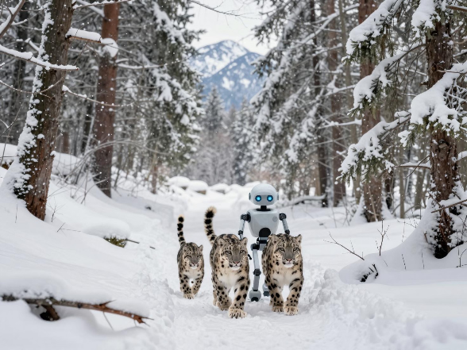

| PolarSPARC |
Quick Test :: Using Z-Image-Turbo on a Local Machine
| Bhaskar S | 05/15/2026 |
Using Z-Image-Turbo for Image Generation
In the following section, we will demonstrate how one can use the Z-Image-Turbo text-to-image Diffusion model on a decent 8-core desktop with 64GB system memory and 16GB video memory Nvidia GPU.
Ensure that Python 3.1x programming language is installed and setup on the desktop.
In addition, install the following necessary Python modules by executing the following command:
$ pip install accelerate diffusers huggingface_hub pillow torch
The first step is to download the Z-Image-Turbo model from the HuggingFace repository to the default HuggingFace directory $HOME/.cache/huggingface on the desktop.
from huggingface_hub import snapshot_download image_repo_id = 'Tongyi-MAI/Z-Image-Turbo' snapshot_download(repo_id=image_repo_id)
The above code execution will take a few minutes to complete as the model needs to be downloaded to the desktop over the Internet.
With a 1 Gbps internet speed, the 'snapshot_download' command will take between 5 to 10 minutes to download the model !!!
Create a directory called /tmp/images where the model generated image would be stored.
Execute the following Python code snippet to run the text-to-image diffusion model:
from diffusers import ZImagePipeline
import torch
image_dir = '/tmp/images'
num_inference_steps = 12
device = 'cpu'
torch_bfloat16 = torch.bfloat16
c_pipe = ZImagePipeline.from_pretrained(image_repo_id,
torch_dtype=torch_bfloat16,
low_cpu_mem_usage=False,)
c_pipe = c_pipe.to(device)
c_pipe.enable_sequential_cpu_offload()
aspect_ratios = {
'1:1': (1328, 1328),
'16:9': (1664, 928),
'9:16': (928, 1664),
'4:3': (1472, 1104),
'3:4': (1104, 1472),
'3:2': (1584, 1056),
'2:3': (1056, 1584),
}
width, height = aspect_ratios['4:3']
prompt = '''
A digital art of a robot walking together with a snow leopard family, through a small snow filled pathway,
with trees on both sizes covered with snow, with broken twigs along the pathway covered in snow, in a dense
forest filled with snow, with snow covered mountain ranges in the background clearly visible from the pathway
'''
image = c_pipe(
prompt=prompt,
height=height,
width=width,
output_type='pil',
num_inference_steps=num_inference_steps,
guidance_scale=guidance_scale,
generator=torch.Generator(device).manual_seed(7)
).images[0]
image.save('/tmp/images/z-robot-leopard.jpg')
It is VERY IMPORTANT to use the float type of torch.bfloat16. Else will encounter RUNTIME ERRORS !!!
On the desktop with the specified specs, the model will leverage the CPU memory and typically run for about 2 mins before generating the desired image !!!
The following is the image generated by the Z-Image-Turbo model for the specific prompt:

Execute the following Python code snippet to run the text-to-image diffusion model:
prompt = '''
A cute baby panda performing a spectacular dance in the center of Rome colosseum, with people sitting around
in the colosseum, clapping and showering flowers in the air. Render the image in van gogh style
'''
image = c_pipe(
prompt=prompt,
height=height,
width=width,
output_type='pil',
num_inference_steps=num_inference_steps,
guidance_scale=guidance_scale,
generator=torch.Generator(device).manual_seed(7)
).images[0]
image.save('/tmp/images/z-panda-dance.jpg')
The following is the image generated by the Z-Image-Turbo model for the specific prompt:
The Z-Image_turbo model is indeed fast and very good in text to image generation !!!
References